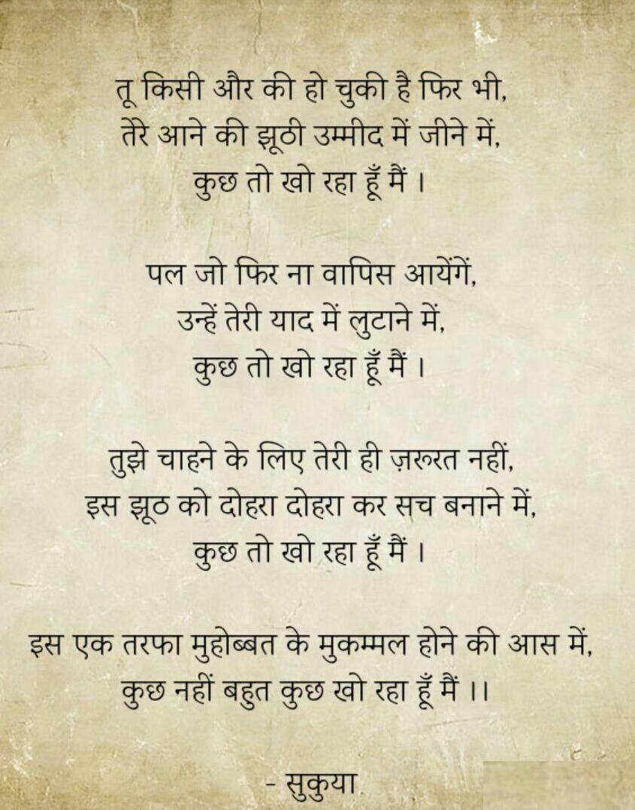
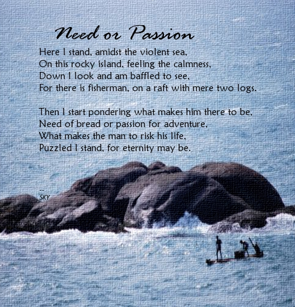
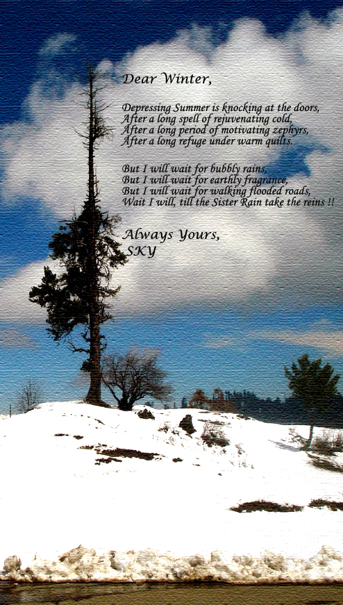

IF ONLY YOU WERE A BOOK
If only you were a book .. .. ..
[Composed: Under composition]
वैसा ही देस है मेरा!
भूमिका:
मेरे एक मित्र ने कुछ दिनों पहलें एक रचना साँझा की थी, "तेरा शहर मुझे रास न आया" और उसे पढ़कर जो विचार ज़हन में आए उन्हें मैंने भी एक रचना का रूप देने का प्रयास किया। पहले तो मैं मित्र की रचना साँझा करना चाहूँगा तथा बाद में अपनी।
रचना:
जैसा देस है तेरा वैसा ही देस है मेरा। जिसे खुदा ना समझे उनको तूने परछाइयों से समझना चाहा, गिला ना कर गर समझ न आया। जमीं पे तेरा मेरा कम ना था, अब आसमां पे मेरा तेरा क्यूं। अब आंखे मूंद ही ली है तुमने, तो धुआं घुलेगा क्यूं। अंधेरा तो वहां भी सबसे रूठा ही है, और जो बात रही आइने कि, तो अतिथि समझ सच दिखलाता नहीं। मैं तो तुझमें ही हूं, फिर भी कमी सी लगती है, तो क्या आश्चर्य जब आहट अजनबी सी लगती है। कुछ समय दे, ये कहर भी समाप्त हो जाएगा, यही देश तुझे फिर रास आएगा। आसमां, रात, सहर, गलियां, आहट, सब अपनी सी ही पाएगा। अपने को तू फिर भूल जाएगा। जैसा देस है तेरा वैसा ही तू मेरे देस को बतलाएगा। जैसा देस है तेरा वैसा देस है मेरा, गा गा झूमता जाएगा, झूमता जाएगा ।
"जैसा देस है तेरा वैसा ही देस है मेरा", ये शीर्षक चलचित्र वीर-ज़ारा के एक गीत के बोल हैं । TUHIN's BLOG
[Composed: 31 March, 2020]
कुछ तो खो रहा हूँ मैं
[Composed: 2018]
ALWAYS
In the dark abyss, when even shadows left me, she was there for me. In those hours of delusions, to take care, she was there for me. Into those unfathomable depths of despair, she was there for me. Amidst those never ending spells of boredom, she was there for me. When my heart was broken, to hold me together, she was there for me. Those moments where I failed, to fill me with hope, she was there for me. In the world of my hidden secrets, where I trusted no one, she was there for me. To appreciate my little accomplishments, she was there for me. Alas! Just a figment of my fantasy, nonetheless she was there for me. Alas! Just a piece of my imagination, nonetheless, she was there for me. Like a bumblebee, sweetly annoying, she was there for me. She was there for me, and will remain with me, Always. Dedicated to the lass I adore the most.
[Composed: 2017]
THE LOVE FOREVER
A bee you were, a bumblebee No sting you had, a sting-less bee The lass I always, wanted to see The eyes you had, were deep as sea. A kiss you were, a gentle kiss No moisture it had, a moist less kiss The kiss I always wanted to kiss The kiss which I will, always miss. The love you were, a gentle love Peaceful you were, a white dove The love it is, and is a fever The love it was, and will be forever. Dedicated to the lass I adore the most.
[Composed: 2013]
PERCEPTION
What if the life you are living is not in your control. Extreme fear can sometime cause you to believe things which are not there in reality but in your head. It can take form of delusions or hallucinations. How can one come out of such situation ? Is there any need to come out of such delusions ? Will you be forced to come out of such delusions ? They are one’s own wishes and desires which crosses the mind in a flash and thus results in delusions. So, then why would one wish to come out of one’s desires being fulfilled in form of delusions. Some say it full, some find it empty. Few find it impossible, few say it difficult. I know it’s full, I make it empty. I make it impossible, I say I’m possible. Some say it upright, some find it downright. Few find it wide, few say it narrow. I know it’s upright, I make it downright I make it wide, And I know it’s narrow This poem is dedicated to my friend who helped me understand the word perception.
[Composed: 2012]
जी करे
जी करे आज दौड़ भगूं , दुनियां की इस सांझेदारी से, कूद पडूँ , उछल पडूँ , दुनिया की इस सांझेदारी से | क्यूँ मौन रहूँ, क्यूँ बोल पडूँ, स्वयं का नहीं क्या नियंत्रण कोई | मैं वो न करूँ जो वो चाहे , मैं वहां न मरूं जहाँ वो चाहे | पर मरूँ, और दुनियां ले मरूँ, पर हसूँ, और दुनियां संग हसूँ | कहाँ उसकी पल्खों की छाँव, और कहाँ ये तपती धूप , कहाँ वो चढ़ती जवानी , और कहाँ ये ढलता रूप | माना ये अनमोल घटा के सायें हैं , माना ये ठण्ड में गर्म हवाएं हैं, दिल तो फिर भी धड़कता है न, मन तो फिर भी मचलता है न, कैसे कहें, बेवजह है ये सब, कैसे कहें, यूहीं चल रहे हैं सब | छप छप पैरों की पानी से मिलन की आवाजें हैं, धक धक दिल के धड़कने का सन्नाटा है, बात वही सब बतलाते बस अंदाज़ अपना अपना है, कभी शब्दों का तो कभी मात्राओं का हेर फेर है, कैसे कहें, बेवजह है ये सब, कैसे कहें, यूहीं चल रहे हैं सब |
[Composed: 2012]
NEED OR PASSION
The poem is inspired by a view from Vivekanada Rock Memorial, Kanyakumari, India and was composed by me during a creative writing session on the TJY Express’09.
[Composed: 2010]
Dear Winter
Summer is about to come after long winters, and the poet who finds them depressing, shows his indomitable spirit with a hope for Rains to follow.
[Composed: 2009]
Tunnel
Sometimes when we reach the end of the tunnel, it’s pretty chilling night outside and we think that we have traveled to the wrong end of the tunnel and revert our way, in a hope of reaching the other end, light waiting for us. But we are naive not to realize that this is just the beginning of a damped oscillation which will pave the path for our settlement at the center of the tunnel forever. Shouldn’t we wait at the tunnel for Nature to take its course, the sun to rise and light to fall upon us !!
[Composed: 2009]
Success
Alone wandering by the sea, I found a pretty flea. “What’s success, you dainty creature ?” “Sorry, you ask that old preacher.” I enquired and replied he: Success is:
[Composed: 2003]